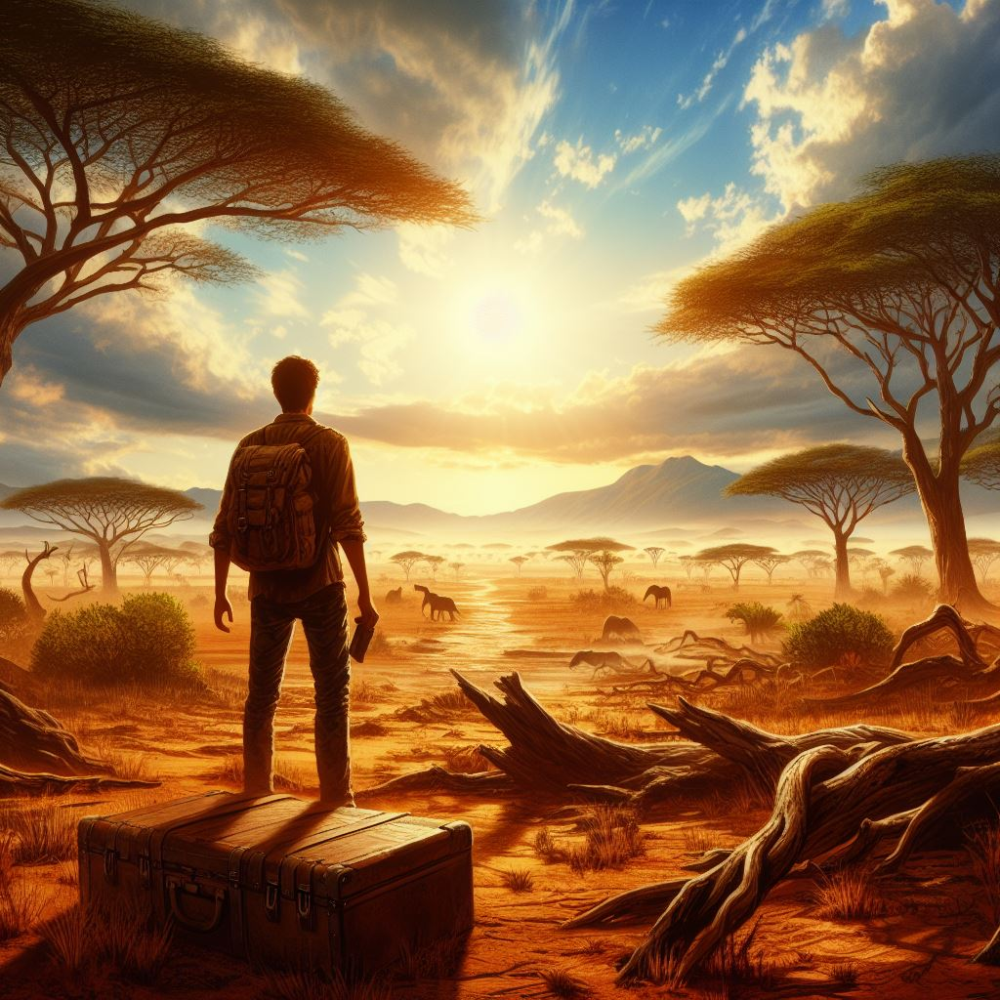
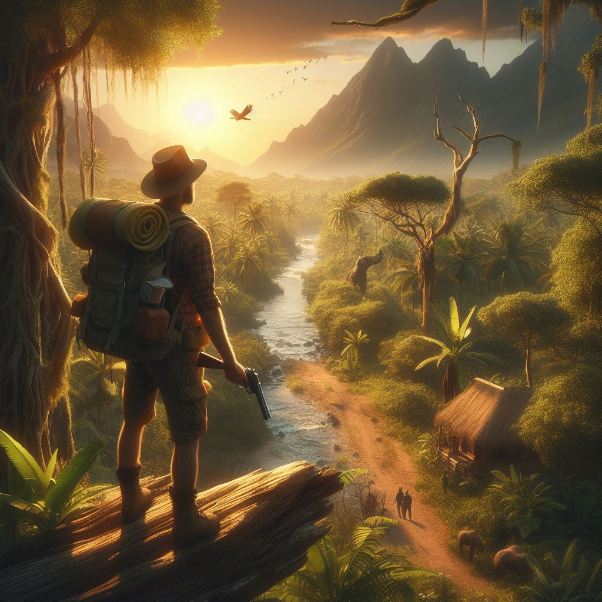
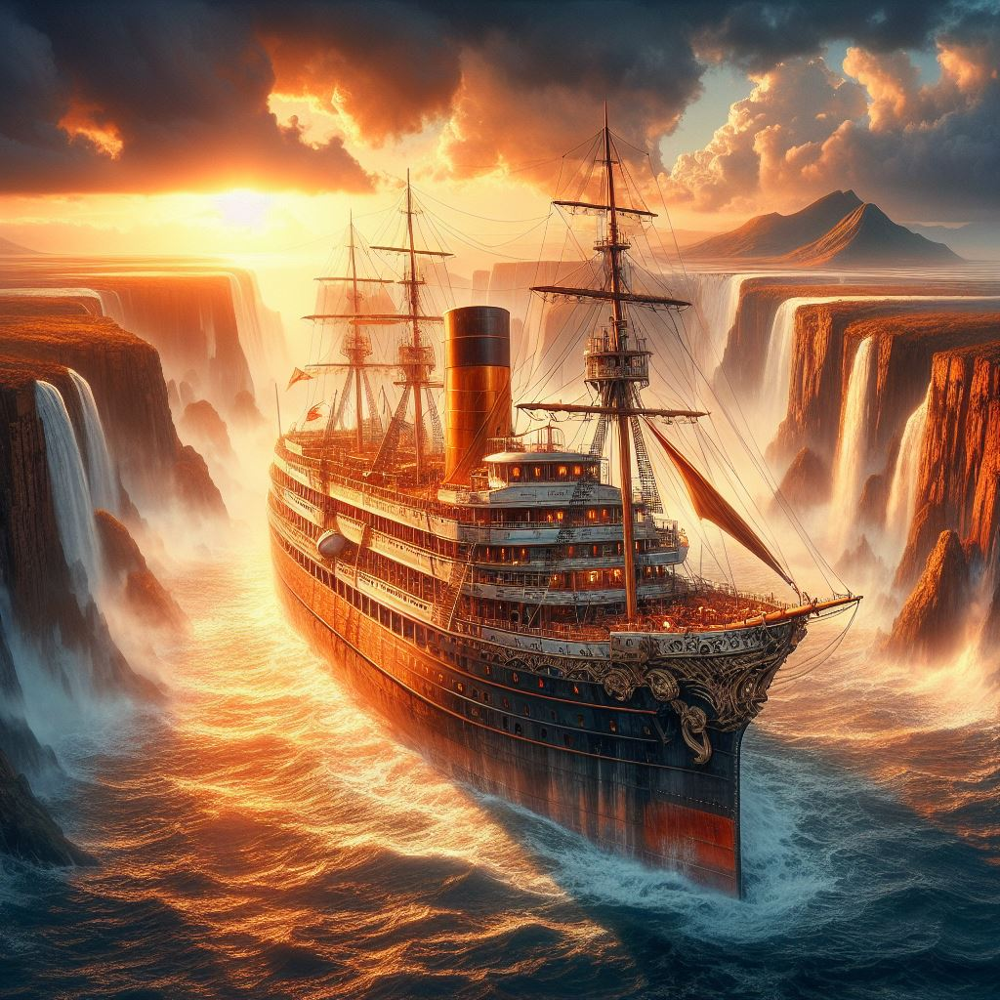

| Име на място | Визуално описание на мястото | Изображение, представящо мястото | Бележки за мястото |
|---|---|---|---|
| В близост до границата на Танзания | "Един ден, докато изследвал неизследвана територия близо до границата на Танзания, Джак се натъкнал на древна карта, скрита в тайник зад скала." Танзания, разположена в Източна Африка, е разнообразна и живописна страна, известна със своите красиви пейзажи, богата дива природа и културно наследство. |  | Описанието на мястото е създадено с помощта на изкуствения интелект BgGPT. Изображението на мястото е генерирано с Copilot посредством описание. |
| Мозамбик | "След седмици на пътуване през коварната пустош Джак най-накрая стигна до Мозамбик - страна, която никога преди не бе посещавал." Мозамбик е източноафриканска държава, известна със своите красиви плажове, буйни тропически гори и богато културно наследство. Разположена по източното крайбрежие на Африка, тя има дълга брегова ивица, облицована с бял пясък и кристално чисти води. Страната е дом на различни местни племена, които са запазили своите традиции и обичаи през вековете, добавяйки към уникалното културно разнообразие на страната. |  | Описанието на мястото е създадено с помощта на изкуствения интелект BgGPT. Изображението на героинята е генерирано с Copilot посредством описание. |
| Корабът "The African Queen" | "С диаманта в безопасност, Джак, Мария и техните приятели избягаха от лагера, точно когато пиратската флота потъна в морето, унищожена от собственото си високомерие. Те се върнаха при "The African Queen", където празнуваха победата си." "The African Queen" беше внушителен, модерен кораб, олицетворение на съвременната технология и дизайн. Дълъг около 300 фута, той се извисяваше над водата като стоманена планина, излъчвайки сила и изтънченост. Корпусът на кораба беше изработен от най-здравите и леки материали, направени да издържат на всякакви условия, с които биха могли да се сблъскат в открито море. |  | Описанието на мястото е създадено с помощта на изкуствения интелект BgGPT. Изображението на мястото е генерирано с Copilot посредством описание. |